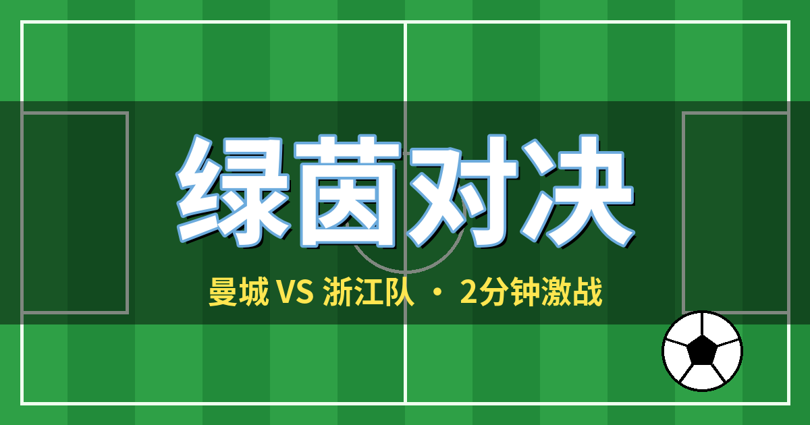

⚽ 绿茵对决
两种模式 · 曼城 VS 浙江队 · 手机电脑都能玩

▶ 开始游戏
📖 玩法说明
两种玩法
快速比赛
：2 分钟对战，可打电脑 AI（简单 / 普通 / 困难）或本地双人；打平有金球加时，再平进点球
点球大战
：双方各罚 5 轮，打平进入突然死亡；瞄准锁定 → 力度锁定，还能亲自当门将扑救
选择你的球队
曼城 · 天蓝
浙江队 · 绿
蓄力射门、冲刺抢断、进球慢放特效
电脑键盘、手机触屏都能玩
进入游戏后可选「快速比赛」或「点球大战」